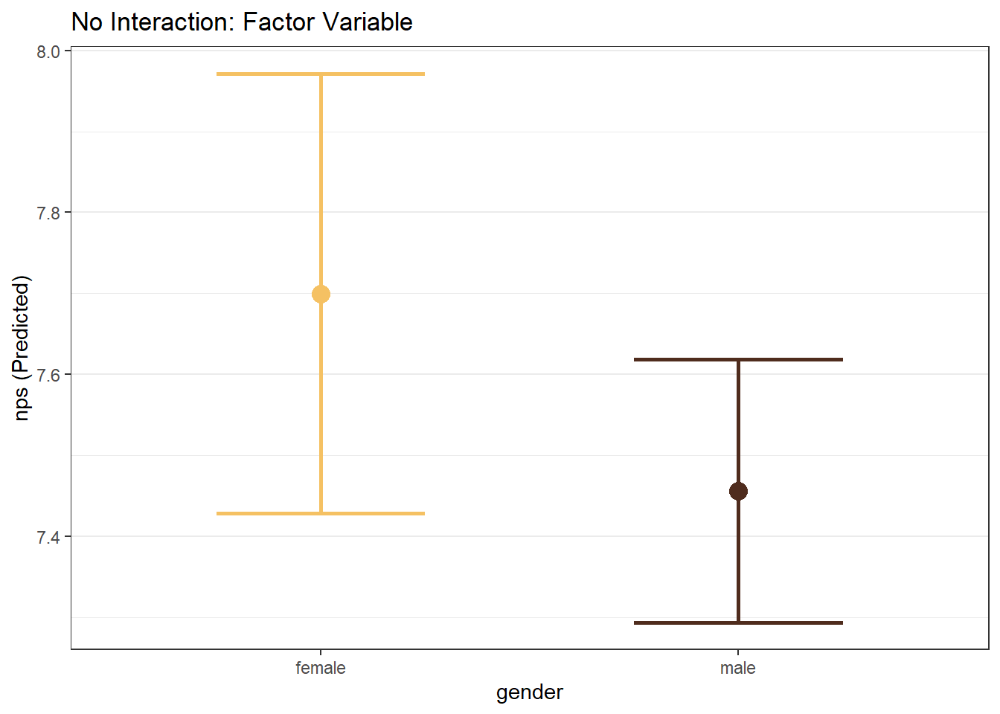

Chapter 8 Linear Regression
Linear regression is one of the most widely used tools in marketing analytics. It allows us to quantify relationships between an outcome variable and one or more predictors, helping us explain variation, estimate marginal effects, and generate predictions.
In earlier chapters, we summarized data numerically and visually. In this chapter, we move beyond description to modeling relationships between variables.
Throughout this chapter, we use the airlinesat_small dataset and focus on
interpretation rather than mathematical derivation.
8.1 The Linear Regression Model
A linear regression model relates an outcome variable to one or more predictors.
In R, linear regression models are estimated using the lm() function.
The general structure is:
8.2 Simple Linear Regression
We begin with a simple linear regression model containing a single predictor.
In this example, we model Net Promoter Score (nps) as a function of the number
of flights taken (nflights). If we don’t ask for a summary we only get the coefficients. If we save the result as an object and then ask for a summary, we get the full, expected results.
Call:
lm(formula = nps ~ nflights, data = airlinesat_small)
Coefficients:
(Intercept) nflights
7.65848 -0.01031
Call:
lm(formula = nps ~ nflights, data = airlinesat_small)
Residuals:
Min 1Q Median 3Q Max
-6.6482 -1.4318 0.4137 1.5476 8.0512
Coefficients:
Estimate Std. Error t value Pr(>|t|)
(Intercept) 7.658478 0.085356 89.72 < 2e-16 ***
nflights -0.010306 0.003518 -2.93 0.00347 **
---
Signif. codes: 0 '***' 0.001 '**' 0.01 '*' 0.05 '.' 0.1 ' ' 1
Residual standard error: 2.321 on 1063 degrees of freedom
Multiple R-squared: 0.00801, Adjusted R-squared: 0.007077
F-statistic: 8.583 on 1 and 1063 DF, p-value: 0.003465Interpretation focuses on:
- The intercept: the predicted net promoter score (NPS) when the number of flights is zero
- The slope on
nflights: the expected change in NPS for one additional flight - R-squared: the proportion of variation in NPS explained by the model
8.2.1 “Nice” Output
For nicer looking output, we can use either the summ function from the jtools package. It easily allows us to adjust the number of digits shown (digits = # option). It can also show the standardized beta coefficients by using the scale=TRUE and transform.response=TRUE options together.
| Observations | 1065 |
| Dependent variable | nps |
| Type | OLS linear regression |
| F(1,1063) | 8.5832 |
| R² | 0.0080 |
| Adj. R² | 0.0071 |
| Est. | S.E. | t val. | p | |
|---|---|---|---|---|
| (Intercept) | 7.6585 | 0.0854 | 89.7243 | 0.0000 |
| nflights | -0.0103 | 0.0035 | -2.9297 | 0.0035 |
| Standard errors: OLS |
| Observations | 1065 |
| Dependent variable | nps |
| Type | OLS linear regression |
| F(1,1063) | 8.5832 |
| R² | 0.0080 |
| Adj. R² | 0.0071 |
| Est. | S.E. | t val. | p | |
|---|---|---|---|---|
| (Intercept) | 0.0000 | 0.0305 | 0.0000 | 1.0000 |
| nflights | -0.0895 | 0.0305 | -2.9297 | 0.0035 |
| Standard errors: OLS; Continuous variables are mean-centered and scaled by 1 s.d. |
8.3 Multiple Linear Regression
In practice, outcomes are influenced by more than one factor. Multiple linear regression allows us to include additional predictors to control for other characteristics.
8.3.1 Adding Additional Variables
| Observations | 1065 |
| Dependent variable | nps |
| Type | OLS linear regression |
| F(2,1062) | 8.5875 |
| R² | 0.0159 |
| Adj. R² | 0.0141 |
| Est. | S.E. | t val. | p | |
|---|---|---|---|---|
| (Intercept) | 6.7861 | 0.3106 | 21.8516 | 0.0000 |
| nflights | -0.0091 | 0.0035 | -2.5822 | 0.0100 |
| age | 0.0170 | 0.0058 | 2.9208 | 0.0036 |
| Standard errors: OLS |
When additional predictors are included, coefficients are interpreted as marginal effects holding other variables constant.
8.4 Categorical Predictors and Reference Groups
Regression models can include categorical predictors. In R, factor variables are automatically converted into indicator (dummy) variables.
8.4.1 Example: Flight Class
| Observations | 1065 |
| Dependent variable | nps |
| Type | OLS linear regression |
| F(3,1061) | 4.1443 |
| R² | 0.0116 |
| Adj. R² | 0.0088 |
| Est. | S.E. | t val. | p | |
|---|---|---|---|---|
| (Intercept) | 7.7273 | 0.1793 | 43.0949 | 0.0000 |
| nflights | -0.0108 | 0.0035 | -3.0691 | 0.0022 |
| flight_classEconomy | -0.0946 | 0.1881 | -0.5029 | 0.6151 |
| flight_classFirst | 1.0666 | 0.6232 | 1.7115 | 0.0873 |
| Standard errors: OLS |
One category is treated as the reference group. Coefficients for other categories represent differences relative to that reference. In the example above, “Business” is treated as the reference group.
To change the reference group, use relevel(). It can be changed temporarily within the call to lm(), or it can be changed permanently in the dataframe.
# Temporary level chance in formula
model_cat_relevel <- lm(nps ~ nflights + relevel(flight_class, ref="Economy"),
data = airlinesat_small)
summ(model_cat_relevel, digits = 4)| Observations | 1065 |
| Dependent variable | nps |
| Type | OLS linear regression |
| F(3,1061) | 4.1443 |
| R² | 0.0116 |
| Adj. R² | 0.0088 |
| Est. | S.E. | t val. | p | |
|---|---|---|---|---|
| (Intercept) | 7.6327 | 0.0907 | 84.1145 | 0.0000 |
| nflights | -0.0108 | 0.0035 | -3.0691 | 0.0022 |
| relevel(flight_class, ref = “Economy”)Business | 0.0946 | 0.1881 | 0.5029 | 0.6151 |
| relevel(flight_class, ref = “Economy”)First | 1.1612 | 0.6052 | 1.9187 | 0.0553 |
| Standard errors: OLS |
8.5 Interaction Effects
An interaction allows the effect of one predictor to depend on the level of
another predictor. Interactions can be included in the formula using * or :
*will include the interaction term AND each main effect:will include ONLY the interaction term- Examples:
y ~ x1 + x2 * x3is the same as:
\(y = x1 + x2 + x3 + (x2 \times x3)\)y ~ x1 + x2:x3 is the same as: $y = x1 + (x2 \times x3)$ 0y ~ x1 + x2 + x2:x3` is the same as:
\(y = x1 + x2 + (x2 \times x3)\)
8.5.1 Example: Flights and Frequent Flier Status
model_inter <- lm(nps ~ age + nflights * status, data = airlinesat_small)
summ(model_inter, digits = 4)| Observations | 1065 |
| Dependent variable | nps |
| Type | OLS linear regression |
| F(6,1058) | 5.0753 |
| R² | 0.0280 |
| Adj. R² | 0.0225 |
| Est. | S.E. | t val. | p | |
|---|---|---|---|---|
| (Intercept) | 6.8771 | 0.3136 | 21.9308 | 0.0000 |
| age | 0.0154 | 0.0058 | 2.6320 | 0.0086 |
| nflights | 0.0003 | 0.0046 | 0.0565 | 0.9550 |
| statusGold | 0.1997 | 0.3155 | 0.6330 | 0.5269 |
| statusSilver | 0.0803 | 0.2528 | 0.3178 | 0.7507 |
| nflights:statusGold | -0.0158 | 0.0104 | -1.5241 | 0.1278 |
| nflights:statusSilver | -0.0266 | 0.0097 | -2.7348 | 0.0063 |
| Standard errors: OLS |
8.6 Margin Plots with easy_mp
Rather than using exploratory plots or manually creating margin plots, we use the easy_mp() function from the
MKT4320BGSU package to visualize predicted values and marginal effects.
8.6.1 The easy_mp() Function
This function creates marginal effects plots for a focal predictor (with or without an interaction) from a linear regression (lm) or binary logistic regression (glm with family = "binomial").
Usage: easy_mp(model, focal, int = NULL)
Arguments:
modelis a fittedlmmodel or binary logisticglmmodel (family = "binomial").focalis the name of the focal predictor variable in quotationsintis the name of the interaction variable in quotations. Can be excluded if only the focal variable is wanted or no interaction exists.
Returns:
- $plot is the margin plot
- $ptable is the marginal effects table used to produce the plot
8.6.2 WITHOUT Interactions
Below are examples of a margin plot for a continuous independent variable and for a categorical/factor independent variable. Note how the returned $plot object is a ggplot that can be modified by adding layers.
model_mp_nointer <- lm(nps ~ age + gender, data = airlinesat_small)
# Continuous Focal WITHOUT Interaction
mp_age <- easy_mp(model_mp_nointer, focal="age")
mp_age$plot +
labs(title="No Interaction: Continuous Variable")
# Factor Focal WITHOUT Interaction
mp_gender <- easy_mp(model_mp_nointer, focal="gender")
mp_gender$plot +
labs(title="No Interaction: Factor Variable")
8.6.3 WITH Interactions
Ultimately, there are four types of margin plots that can be created depending on the focal variable type and the interaction variable type:
- Continuous Focal IV \(\times\) Continuous Interaction IV
- Continuous Focal IV \(\times\) Factor Interaction IV
- Factor Focal IV \(\times\) Continuous Interaction IV
- Factor Focal IV \(\times\) Factor Interaction IV
When the interaction term is continuous, the plot is created with representative values of the continuous variable (roughly the 1st percentile, the 99th percentile, and two evenly spaced values between those two).
model_mp_inter <- lm(nps ~ age*gender + age*reputation + gender*status, data = airlinesat_small)
# Continuous Focal WITH Continuous Interaction
mp_age_reputation <- easy_mp(model_mp_inter, focal = "age", int = "reputation")
mp_age_reputation$plot +
labs(title="Interaction: Continuous Focal IV by Continuous Interaction IV")
# Continuous Focal WITH Factor Interaction
mp_age_gender <- easy_mp(model_mp_inter, focal = "age", int = "gender")
mp_age_gender$plot +
labs(title="Interaction: Continuous Focal IV by Factor Interaction IV")
# Factor Focal WITH Continuous Interaction
mp_gender_age <- easy_mp(model_mp_inter, focal = "gender", int = "age")
mp_gender_age$plot +
labs(title="Interaction: Factor Focal IV by Continuous Interaction IV")
# Factor Focal WITH Factor Interaction
mp_gender_status <- easy_mp(model_mp_inter, focal = "gender", int = "status")
mp_gender_status$plot +
labs(title="Interaction: Factor Focal IV by Factor Interaction IV")
8.7 Prediction
Regression models can also be used for prediction. The function predict() can be used to predict the DV based on values of the IVs. We can either: (1) predict the expected value of the DV for each observation in the data, or (2) predict the expected value of the DV for new values of the IV(s). To use this function for (2), we must pass a data frame of values to the function, where the data frame contains ALL of the IVs and the value for each IV that we want.
Suppose we wanted to predict, with a confidence interval, the nps of someone that is 45 years old and had 25 flights on the airline, and also someone that is 25 years old and had 45 flights on the airline, based on our model_multi <- lm(nps ~ nflights + age, data = airlinesat_small) from above. First, we create the data frame of values
age nflights
1 45 25
2 25 45Second, the data frame is passed to the predict() function with confidence intervals requested.
fit lwr upr
1 7.322601 7.153951 7.491252
2 6.800657 6.431058 7.1702558.8 What’s Next
In this chapter, you learned how to use linear regression to model relationships when the outcome variable is continuous, such as satisfaction or Net Promoter Score. Linear regression works well when predicted values can reasonably fall anywhere along a numeric scale.
Many marketing outcomes, however, are binary—for example, purchase vs. no purchase, churn vs. retention, or click vs. no click. In these cases, linear regression is no longer appropriate.
In the next chapter, we introduce binary logistic regression, a modeling approach designed specifically for yes/no outcomes. You will learn how to estimate probabilities, interpret coefficients and marginal effects, and evaluate model performance in a way that is well-suited to common marketing decision problems.